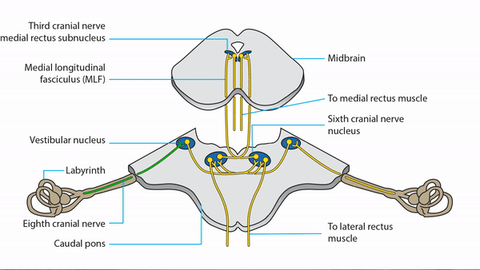
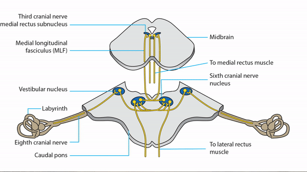
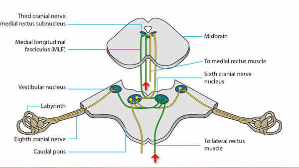
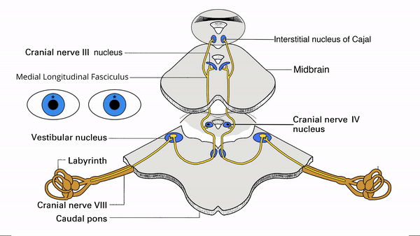
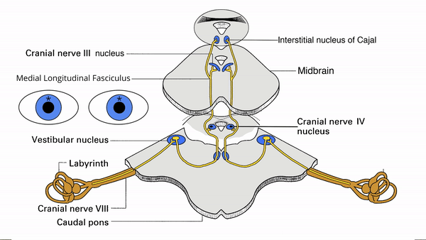
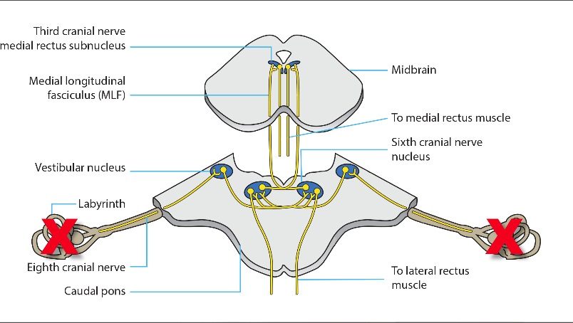
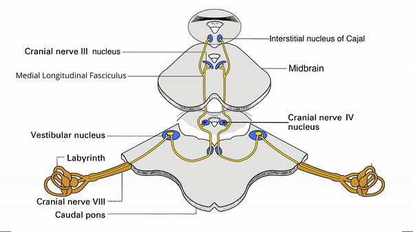
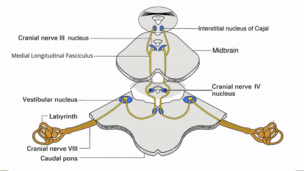

Head or body movement or head tilt triggers signal in semicircular canals and otoliths

Signal goes from inner ear via vestibular nerve to medullary vestibular nuclei


To generate the horizontal vestibulo-ocular reflex, the signal goes directly from the vestibular nucleus to the sixth nerve nucleus and from there via the MLF to the medial rectus nucleus
and eventually to the lateral and medial rectus muscles to move the eyes horizontally

To generate the vertical vestibulo-ocular reflex, the signal travels from the vestibular nuclei on both sides to the midbrain and from there to appropriate extraocular muscles to produce vertical shifts in the eyes

To generate the torsional vestibulo-ocular reflex, the signal also goes to the midbrain and from there to appropriate extraocular muscles to produce conjugate ocular torsional movements
Video is over 1 minute
Produces small horizontal contraversive conjugate eye movements when head is moved rapidly to side of lesion in “head impulse test”
Head impulse test with lesion
Common causes: vestibular neuritis, labyrinthitis

Bilateral lesions of semicircular canals, otolith, or vestibular nerves
Eyes make observable horizontal contraversive binocular saccades as head is moved rapidly back and forth (“bilaterally positive head impulse test”)
Otoxoxicity
Lack of stability of eyes during rapid head movement disturbs foveation and causes blurred vision; can be tested by comparing visual acuity before and after rapidly moving patient’s head back and forth (“positive dynamic visual acuity test”)
Otoxoxicity
Common cause: ototoxicity from aminoglycoside medication
Tip: binocular symmetric dysfunction of semicircular canals or otoliths does not cause nystagmus


Lesion of pons or medulla
Produces abnormal static ocular tilt reaction, which causes conjugate ocular torsion and vertical misalignment of the eyes (skew deviation)
Torsional misalignment is not usually apparent to patient and too small to be detected in normal clinical examination, but the vertical misalignment, often small, is appreciated by the patient as blurred vision or diplopia
Skew deviation
Certain bilateral brainstem lesions may damage the downgaze vestibulo-ocular reflex more than the upgaze vestibulo-ocular reflex,
Vertical VOR Lesion Revised
causing an imperceptible tonic upward shift of the eyes, which is met by a conjugate downbeat nystagmus
Downbeat Bystamgums
Other bilateral brainstem lesions may damage the upgaze vestibulo-ocular reflex more than the downgaze vestibulo-ocular reflex,
causing a tonic downward shift of the eyes, which is met by a conjugate upbeat nystagmus
Upbeat Nystagmus Revised
Tip:
upbeat nystagmus may be caused by lesions anywhere within the brainstem, whereas downbeat nystagmus is usually caused by lesions of the cerebellum or medulla
Lesion of thalamus or midbrain
May produce static ocular tilt reaction, which causes persistent skew deviation
May produce oscillating ocular tilt reaction, which causes seesaw nystagmus;
Seesaw Nystagmus
this phenomenon is most often noted in young children
May produce intermittent (“paroxysmal”) skew deviation